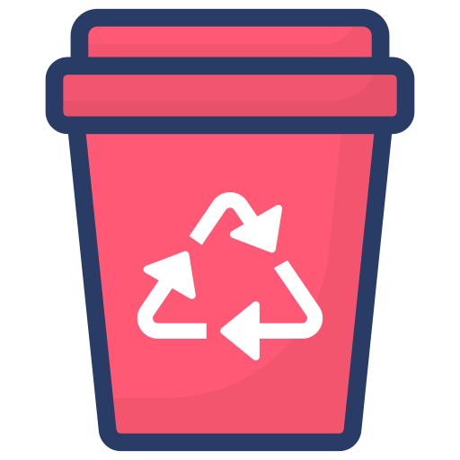
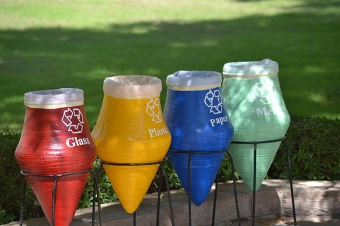

Volver a la Portada (Página anterior) Siguiente página: Tipos de residuos
Reciclar es el proceso por el cual se aprovechan materiales que ya fueron usados para fabricar objetos nuevos. En vez de tirar a la basura envases de vidrio, botellas de plástico, latas o cajas de cartón, estos residuos se recolectan y pasan por una planta donde se limpian, se trituran o se funden. De ahí sale materia prima lista para volver a usarse en la industria. Esto ayuda bastante a no gastar tantos recursos naturales ni llenar los vertederos de desechos. Eso sí, no es lo mismo que reutilizar. Reutilizar significa volver a usar algo tal cual está, como guardar comida en un frasco viejo; el reciclaje, en cambio, requiere transformar por completo el material para darle una nueva forma.

Cuando las empresas fabrican productos nuevos usando materiales que ya fueron utilizados, dejan de talar tantos árboles para hacer papel o de extraer petróleo y minerales. Además, se gasta muchísima menos electricidad en las fábricas; por poner un caso real, hacer aluminio reciclado consume un 95% menos de energía que producirlo desde cero, y con el plástico el ahorro llega al 70%. Al usar menos energía, también bajan las emisiones de gases que calientan la atmósfera. Por otro lado, toda la basura que se recupera deja de acumularse en los vertederos o de acabar flotando en los ríos y océanos, y el propio proceso de recoger y separar estos desechos genera miles de puestos de trabajo.

Volver arriba Volver a la página anterior (Portada) Siguiente página